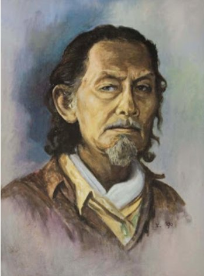

Klaten · b. 19 January 1921
Rustamadji a life in realism
From the foothills of Central Java, one of Indonesia's quietest masters built a body of work the long way — by looking. This archive collects his paintings and those of his sons, Bodas Erlangga and Karang Sasongko.

Selected works
Paintings across three lifetimes.
A rotating selection from the archive — Rustamadji's monumental landscapes, his sons' continuations of the family's realist line.
The next generation
Two sons. One studio.
Bodas Erlangga and Karang Sasongko grew up grinding pigments and stretching canvas in their father's studio. They paint today in their own voices — and in continued conversation with his.
The reference
Meniti Bumi
Walking the Earth, Rustamadji Klaten
The principal monograph on Rustamadji's life and work — published by the family estate, with essays, photographs, and a full catalogue of the paintings. The biography on this site draws on its research.
Biography · Realism
A life, in patient observation.
Klaten, Central Java · 19 January 1921 · Realism
Rustamadji was born on 19 January 1921 in Klaten, a regency in Central Java situated between the slopes of Mount Merapi and the cultural heart of Surakarta. The light, the rice fields, and the volcanic ridges of his birthplace would become recurring subjects throughout a lifetime of painting.
Working firmly within the tradition of realism, Rustamadji devoted himself to observed truth — figures rendered with anatomical precision, landscapes built from patient layers of oil, and portraits that read like quiet biographies. He refused the shortcuts of stylisation; every brushstroke had to answer to nature.
His life and work are documented in the monograph "Meniti Bumi, Rustamadji Klaten / Walking the Earth, Rustamadji Klaten", which traces his journey across Java and the friendships and apprenticeships that shaped his eye. The book remains the principal reference for scholars of his oeuvre.
Rustamadji raised two sons who became painters in their own right — Bodas Erlangga and Karang Sasongko — extending the family's commitment to disciplined, observation-led painting into a second generation.
1921
Year of birth
The catalogue.
A growing archive. Click any work for full details — medium, dimensions, year, and notes from the family record.
The second generation
Two sons, two voices, one continuing line.
Both Bodas Erlangga and Karang Sasongko followed their father into painting. Each has carried the family's realist discipline somewhere new — Bodas into atmosphere, Karang into form.
Get in touch
We'd be delighted to hear from you.
For inquiries about archive access, exhibition loans, prints, or scholarship — reach the family office through any of the channels below, or send a note here.
- WhatsAppOpen conversation
- Telephone
- StudioKlaten, Central Java, Indonesia